Table of Contents
Table of Contents  NSFNET
Routing Architecture
NSFNET
Routing ArchitectureTable of Contents NSFNET
Routing Architecture
Interior routing protocols or interior gateway protocols (IGPs) are used to exchange routing information between routers within a single autonomous system. They are also used by routers which run exterior routing protocols to collect network-reachability information for the autonomous system.
Note: The term interior routing protocol has no abbreviation in common use, so we shall use the abbreviation IGP as is usual in TCP/IP literature.
The most widely used IGPs are:
In this section, we discuss the Vector-Distance and Link-State, Shortest Path First routing algorithms.
The term Vector-Distance refers to a class of algorithms that gateways use to update routing information. Each router begins with a set of routes for those networks or subnets to which it is directly attached, and possibly some additional routes to other networks or hosts if the network topology is such that the routing protocol will be unable to produce the desired routing correctly. This list is kept in a routing table, where each entry identifies a destination network or host and gives the ``distance'' to that network. The distance is called a metric and is typically measured in ``hops''.
Periodically, each router sends a copy of its routing table to any other router it can reach directly. When a report arrives at router B from router A, B examines the set of destinations it receives and the distance to each. B will update its routing table if:
This kind of algorithm is easy to implement, but it has a number of disadvantages:
Another disadvantage is that each router has to send a copy of its entire routing table to every neighbor at regular intervals. Of course, one can use longer intervals to reduce the network load but that introduces problems related to how well the network responds to changes in topology.
Vector-distance algorithms using hop counts as a metric do not take account of the link speed or reliability. Such an algorithm will use a path with hop count 2 that crosses two slow-speed lines, instead of using a path with hop count 3 that crosses three token-rings and may be substantially faster.
The most difficult task in a vector-distance algorithm is to prevent instability. Different solutions are available:
Let us choose a value of 16 to represent infinity. Suppose a network becomes inaccessible; all the immediately neighboring routers time out and set the metric to that network to 16. We can consider that all the neighboring routers have a piece of hardware that connects them to the vanished network, with a cost of 16. Since that is the only connection to the vanished network, all the other routers in the system will converge to new routes that go through one of those routers with a direct but unavailable connection. Once convergence has happened, all the routers will have metrics of 16 for the vanished network. Since 16 indicates infinity, all routers then regard the network as unreachable.
The question with vector distance algorithms is not will convergence
occur but how long will it take? Let us consider the configuration shown
in Figure - The Counting to Infinity
Problem.
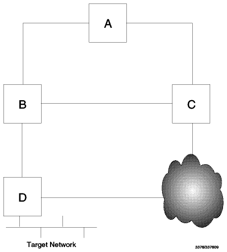
Figure: The Counting to Infinity Problem - All links have a metric
of 1 except for the indirect route from C to D which has a metric of
10.
Let us consider only the routes from each gateway to the target network.
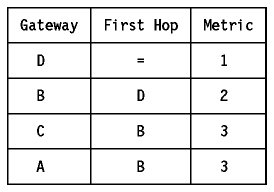
Now, consider that the link from B to D fails. The routes should now adjust to use the link from C to D. The routing changes start when B notices that the route to D is no longer usable. For RIP this occurs when B does not receive a routing update on its link to D for 180 seconds.
The following picture shows the metric to the target network, as it appears
in the routing table of each gateway.
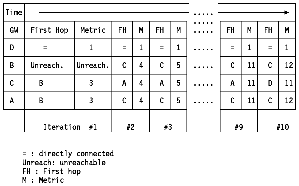
Figure: The Counting to Infinity Problem
The problem is that B can get rid of its route to D (using a timeout mechanism), but vestiges of that route persist in the system for a long time (time between iterations is 30 seconds using RIP). Initially, A and C still think they can reach D via B, so they keep sending updates listing metrics of 3. B will receive these updates and, in the next iteration, will claim that it can get to D via either A or C. Of course, it can't because the routes claimed by A and C (D reachable via B with a metric of 3) are now gone, but they have no way of knowing that yet. Even when they discover that their routes via B have gone away, they each think there is a route available via the other. Eventually the system will converge, when the direct link from C to D has a lower cost than the one received (by C) from B and A. The worst case is when a network becomes completely inaccessible from some part of the system: in that case, the metrics may increase slowly in a pattern like the one above until they finally reach ``infinity''. For this reason, the problem is called counting to infinity. Thus the choice of infinity is a trade off between network size and speed of convergence in case counting to infinity happens. This explains why we chose as low a value as 16 to represent infinity. 16 is the value used by RIP.
The growth in networking over the past few years has pushed the currently available Interior Gateway Protocols, which use vector-distance algorithms, past their limits. The primary alternative to vector-distance schemes is a class of protocols known as Link State, Shortest Path First.
The important features of these routing protocols are:
In general, a link state protocol works as follows. Each router periodically sends out a description of its connections (the state of its links) to its neighbors (routers are neighbors if they are connected to the same network). This description, called a Link State Advertisement (LSA), includes the configured cost of the connection. The LSA is flooded throughout the router's domain. Each router in the domain maintains an identical synchronized copy of a database composed of this link state information. This database describes both the topology of the router's domain and routes to networks outside of the domain such as routes to networks in other autonomous systems. Each router runs an algorithm on its topological database resulting in a shortest-path tree. This shortest-path tree contains the shortest path to every router and network the gateway can reach. From the shortest-path tree, the cost to the destination and the next hop to forward a datagram to is used to build the router's routing table.
Link-state protocols, in comparison with vector-distance protocols, send out updates when there is news, and may send out regular updates as a way of ensuring neighbor routers that a connection is still active. More importantly, the information exchanged is the state of a router's links, not the contents of the routing table. This means that link-state algorithms use fewer network resources than their vector-distance counterparts, particularly when the routing is complex or the autonomous system is large. They are, however, compute-intensive. In return, users get faster response to network events, faster route convergence, and access to more advanced network services.
This was used in the ``Fuzzball'' software for LSI/11 minicomputers, which were widely used in Internet experimentation. The Hello protocol is described in RFC 891 - DCN Local-Network Protocols. It is not an Internet standard.
Note: OSPF (see Open Shortest Path First Protocol (OSPF) Version 2) includes a quite separate protocol for negotiation between routers which is also called the Hello protocol.
The communication in the Hello protocol is via Hello messages which are carried via IP datagrams. Hello uses protocol number 63 (reserved for ``any local network'').
The Hello protocol is significant partly because of its wide deployment during the early expansion of the Internet and partly because it provides an example of a vector-distance algorithm that does not use hop counts like RIP (see Routing Information Protocol Version 1 (RIP, RIP-1)) but, instead, network delays as a metric for the distance.
A Distributed Computer Network (DCN) physical host is a PDP11-compatible processor which supports a number of cooperating sequential processses, each of which is given a unique 8-bit identifier called its port ID. Every DCN host contains one or more internet processes, each of which supports a virtual host given a unique 8-bit identifier called its host ID. There is a one-to-one correspondence between internet addresses and host IDs. Each DCN physical host is identified by a host ID for the purpose of detecting loops in routing updates, which establish the minimum-delay paths between the virtual hosts.
Each physical host contains two tables:
The delay and offset estimates are updated by Hello messages exchanged on the links connecting physical neighbors.
Here is the format of a Hello message:
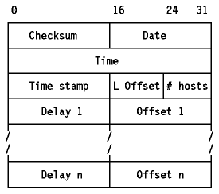
Figure: Hello Message Format
Where:
Let us consider the two main steps of the Hello protocol.
Periodically each host sends a Hello message to its neighbor on each of the communication links common to both of them. For each of these links the sender keeps a set of state variables, including a copy of the source-address field of the last Hello message received. When constructing a Hello message the sender sets the destination-address field to this state variable and the source-address field to its own address. It then fills in the date and time fields from its clock and the time stamp from another state variable. It finally copies the delay and offset values from its host table into the message.
Round-trip delay calculations are performed on the host receiving the Hello message. Each link has an internal state variable assigned, which is updated as each Hello message is received; this variable takes the value of the time field, minus the current time-of-day. When the next Hello message is transmitted, the value assigned to the time stamp field is computed as the low-order 16-bits of this variable minus the current time-of-day. The round trip delay is computed as the low-order 16-bits of the current time-of-day minus the value of the timestamp field.
When a Hello message arrives which results in a valid round trip-delay calculation, a host update process is performed. This consists of adding the round trip delay to each of the ``Delay n'' entries in the Hello message in turn and comparing each of these calculated delays to the delay field of the corresponding host table. Each entry is then updated according to the following rules:
The purpose of the switching threshold is to avoid (together with minimum delay specification) unnecessary switching between links and transient loops which can occur due to normal variations in propagation delays.
Please refer to RFC 891 for more details.
There are two versions of RIP. Version 1 (RIP-1) is a widely deployed protocol with a number of known limitations. Version 2 (RIP-2) is an enhanced version designed to alleviate the limitations of RIP while being highly compatible with it. The term RIP is used to refer to Version 1, while RIP-2 refers to Version 2. Whenever the reader encounters the term RIP in TCP/IP literature, it is safe to assume that it is referring to Version 1 unless explicitly stated otherwise. We shall use this nomenclature in this section except when the two versions are being compared, when we shall use the term RIP-1 to avoid possible confusion.
RIP is a standard protocol (STD 34). Its status is elective. It is described in RFC 1058, although many RIP implementations pre-date this RFC by a number of years. RIP is generally implemented with a daemon named routed. RIP is also supported by gated daemons.
RIP was based on the Xerox PUP and XNS routing protocols. It is widely used, as the code is incorporated in the routing code of Berkeley BSD UNIX which provides the basis for many UNIX implementations.
RIP is a straightforward implementation of
vector-distance routing for local networks. RIP
communication uses UDP as a transport protocol, with port number 520 as the
destination port (see User Datagram Protocol
(UDP) for a description of UDP and ports). RIP operates in one of two
modes: active (normally used by routers) and
passive (normally used by hosts). The difference between the two is
explained below. RIP messages are sent in UDP datagrams and each contains up to
25 pairs of numbers as shown in Figure - RIP
Message.
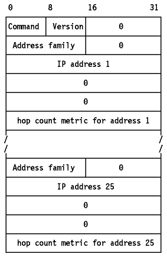
Figure: RIP Message - Between 1 and 25 routes may be listed in a RIP
message. With 25 routes the message is 504 bytes long (25x20+4) which is the
maximum size message that can be transmitted in a 512-byte UDP
datagram.
Both active and passive RIP participants listen to all broadcast messages and update their routing table according to the vector-distance algorithm described earlier.
To improve performance and reliability, RIP specifies that once a router (or host) learns a route from another router, it must keep that route until it learns of a better one (with a strictly lower cost). This prevents routes from oscillating between two or more equal cost paths.
RIP is not designed to solve every possible routing problem. RFC 1720 (STD 1) describes these technical limitations of RIP as ``serious'' and the IETF is evaluating candidates for a new standard ``open'' protocol to replace RIP. Possible candidates include OSPF (see Open Shortest Path First Protocol (OSPF) Version 2) and OSI IS-IS (see OSI Intermediate System to Intermediate System (IS-IS)). However, RIP is widely deployed and therefore is unlikely to be completely replaced for some time. RIP has the following specific limitations:
Solving the counting to infinity problem is done by using the split horizon, poisoned reverse and triggered updates techniques.
Let's consider our example network (shown in
Figure - The Counting to Infinity
Problem) again.
Figure: The Counting to Infinity Problem - All links have a metric
of 1 except for the indirect route from C to D which has a metric of
10.
As described in Vector-Distance the problem was caused by the fact that A and C are engaged in a pattern of mutual deception. Each claims to be able to reach D via the other. This can be prevented by being more careful about where information is sent. In particular, it is never useful to claim reachability for a destination network to the neighbor from which the route was learned (reverse routes). The split horizon with poisoned reverse scheme includes routes in updates sent to the router from which they were learned, but sets their metrics to infinity. If two routers have routes pointing at each other, advertising reverse routes with a metric of 16 will break the loop immediately. If the reverse routes are simply not advertised (this scheme is called simple split horizon), the erroneous routes will have to be eliminated by waiting for a timeout. Poisoned reverse does have a disadvantage: it increases the size of the routing messages.
Split horizon with poisoned reverse will prevent any routing loop that involves only two gateways. However, it is still possible to end up with patterns in which three routers are engaged in mutual deception. For example, A may believe it has a route through B, B through C, and C through A. This cannot be solved using split horizon. This loop will only be resolved when the metric reaches infinity and the network or host involved is then declared unreachable. Triggered updates are an attempt to speed up this convergence. Whenever a router changes the metric for a route, it is required to send update messages almost immediately, even if it is not yet time for one of the regular update messages (RIP specifies a small time delay, between 1 and 5 seconds, in order to avoid having triggered updates generate excessive network traffic).
RIP-2 is a draft standard protocol. Its status is elective. It is described in RFC 1723.
RIP-2 extends RIP-1. It is less powerful than other recent IGPs such as OSPF (see Open Shortest Path First Protocol (OSPF) Version 2) and IS-IS (see OSI Intermediate System to Intermediate System (IS-IS)), but it has the advantages of easy implementation and lower overheads. The intention of RIP-2 is to provide a straightforward replacement for RIP which can be used on small to medium-sized networks, can be employed in the presence of variable subnetting (see Subnets) or supernetting (see Classless Inter-Domain Routing (CIDR)) and importantly, can interoperate with RIP-1.
RIP-2 takes advantage of the fact that half of the bytes in a RIP-1 message are reserved (must be zero) and that the original RIP-1 specification was well designed with enhancements in mind, particularly in the use of the version field. One notable area where this is not the case is in the interpretation of the metric field. RIP-1 specifies it as being a value between 0 and 16 stored in a four-byte field. For compatibility, RIP-2 preserves this definition, meaning that it agrees with RIP-1 that 16 is to be interpreted as infinity, and wastes most of this field.
Note: Neither RIP-1 nor RIP-2 are properly suited for use as an IGP in an AS where a value of 16 is too low to be regarded as infinity, because high values of infinity exacerbate the counting to infinity problem. The more sophisticated Link-State protocol used in OSPF and IS-IS provides a much better routing solution when the AS is large enough to have a legitimate hop count close to 16.
Provided that a RIP-1 implementation obeys the specification in RFC 1058,
RIP-2 can interoperate with RIP-1. The RIP message format is extended as shown
in Figure - RIP-2 Message.
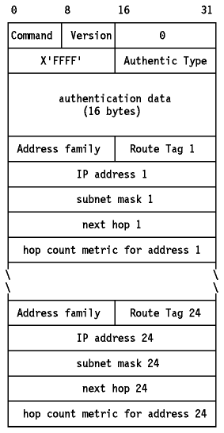
Figure: RIP-2 Message - The first entry in the message may be an
authentication entry, as shown here, or it may be a route as in a RIP-1
message. If the first entry is an authentication entry, only 24 routes may be
included in a message; otherwise the maximum is 25 as in RIP-1.
The fields in a RIP-2 message are the same as for a RIP-1 message except as follows:
To ensure safe interoperation with RIP, RFC 1723 specifies the following restrictions for RIP-2 routers sending over a network interface where a RIP-1 router may hear and operate on the RIP messages.
RIP-2 also supports the use of multicasting rather than simple broadcasting. This can reduce the load on hosts which are not listening for RIP-2 messages. This option is configurable for each interface to ensure optimum use of RIP-2 facilities when a router connects mixed RIP-1/RIP-2 subnets to RIP-2-only subnets. Similarly, the use of authentication in mixed environments can be configured to suit local requirements.
RIP-2 is implemented in recent versions of the gated daemon, often termed gated Version 3. Since the draft standard is new at the time of writing, many implementations will comply with the earlier version described in RFC 1388. Such implementations will interoperate with those adhering to RFC 1723.
For more information on RIP-2, see:
Note: The term OSPF is invariably used to refer to OSPF Version 2 (OSPF-2). OSPF Version 1, which is described in RFC 1131, is obsolete.
OSPF is a draft standard protocol. Its status is elective, but RFC 1370 contains an applicability statement for OSPF which says that any router implementing a protocol other than simple IP-based routing must implement OSPF (this does not preclude a router implementing other protocols as well, of course). OSPF is described in RFC 1583, which obsoletes RFC 1247. OSPF implementations based on RFC 1583 are backward-compatible with implementations based on RFC 1247 and will interoperate with them. Readers interested in the development of OSPF Version 2 from Version 1 should refer to Appendix F of RFC 1247 and Appendix E of RFC 1583.
OSPF is an interior routing protocol, but it is designed to operate with a suitable exterior protocol, such as BGP. See BGP OSPF Interaction.
OSPF is a complex standard when compared to RIP: RFC 1583 runs to 216 pages, whereas RIP, specified in RFC 1058 has 33 pages and RIP-2 (RFC 1723) adds only another 9. Much of the complexity of OSPF is directed towards a single purpose: ensuring that the topological databases are the same for all of the routers within an area. Because the database is the basis for all routing choices, if routers were to have independent databases, they could make mutually conflicting decisions.
OSPF communicates using IP (it is protocol number 89). It is a Link-State, Shortest Path First protocol as described in Link-State, Shortest Path First. OSPF supports different kinds of networks such as point-to-point networks, broadcast networks, such as Ethernet and token-ring, and non-broadcast networks, such as X.25.
The OSPF specification makes use of state machines to define the behavior of routers complying with the protocol. Aspects of a router's operation which are important to OSPF, such as its network interfaces and its neighboring routers, are described as being in one of a finite number of states (for example, a neighbor may be in the down state). There is a separate state machine for each separate component (for example, two network interfaces have separate state machines) and the state of one is independent of the state of another. The possible states are sufficient to describe all possible conditions relevant to the protocol, so a state machine is always in one, and only one, of its possible states. State changes occur only as a result of events. There is a finite set of events for each type of state machine which is sufficient to describe all possible occurrences relevant to the protocol. The behavior of the state machine in response to an event is defined for all possible combinations of state and event. For example, if the state machine for a network interface experiences an InterfaceDown event, the state machine changes to the down state unconditionally. The InterfaceDown event is generated by the OSPF implementation whenever it receives an indication from a lower-level protocol that the interface is not functioning. See RFC 1583 for a complete description of each of the state machines, their possible states and events and the changes associated with them.
Here are some definitions which are necessary to understand the sequence of operations described later in this section:
The division of an autonomous system into areas enables a significant reduction in the volume of routing traffic required to manage the routing database for a large autonomous system.
Note: The nomenclature for this type of router is somewhat varied. RFC 1583, which describes OSPF uses the term AS Boundary Router. RFC 1267 and 1268 which describe BGP use the terms Border Router and Border Gateway. RFC 1340 which describes the interaction between OSPF and BGP uses the term AS Border Router. We shall use the last term consistently when describing both OSPF and BGP.
Each neighbor is described by a state machine which describes the conversation between this router and its neighbor. A brief outline of the meaning of the states follows. See the section immediately following for a definition of the terms adjacency and designated router.
Note: The interfaces do not need IP addresses. Since the remainder of the internet has no practical need to see the routers' interfaces to the point-to-point link, just the interfaces to other networks, any IP addresses for the link would be needed only for communication between the two routers. To conserve the IP address space, the routers can dispense with IP addresses on the link. This has the effect of making the two routers appear to be one to IP but this has no ill effects. Such a link is called an unnumbered link.
Note: RFC 1583 uses the term Link State Database in preference to topological database. The former term has the advantage that it describes the contents of the database, the latter is more descriptive of the purpose of the database -- to describe the topology of the area. We have previously used the term topological database for this reason, but for the remainder of this section where we discuss the operation of OSPF in more detail, we will refer to it as the Link State Database.
Note: Because each router occupies a different place in the area's topology, application of the SPF algorithm gives a different tree for each router, even though the database is identical.
Area border routers run multiple copies of the algorithm but build a single routing table.
The basic sequence of operations performed by OSPF routers is:
Each of these steps is described in the following sections.
When OSPF routers start, they initiate and sustain relationships with their neighbors using the Hello protocol. The Hello protocol also ensures that communication between neighbors is bidirectional. Hello packets are sent periodically out to all router interfaces. Bidirectional communication is indicated when the router sees itself in the neighbor's Hello packet. On a broadcast network, Hello packets are sent using multicast; neighbors are then discovered dynamically. On non-broadcast networks each router that may potentially become a Designated Router has a list of all routers attached to the network and will send Hello packets to all other potential Designated Routers when its interface to the non-broadcast network first becomes operational.
The OSPF header is described in
Figure - OSPF Packet Header.
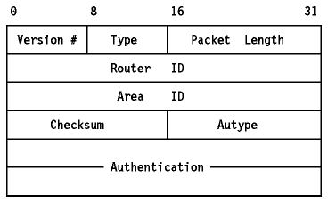
Figure: OSPF Packet Header
The format of the OSPF Hello packet is given in
Figure - OSPF Hello Packet.
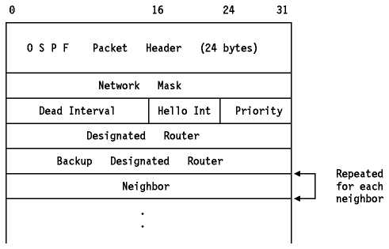
Figure: OSPF Hello Packet
This is done using the Hello protocol. A brief description of the process is given here. See RFC 1583 for a full description. The router examines the list of its neighbors, discards any with which it does not have bidirectional communication or which have a Router Priority of zero, and records the Designated Router, Backup Designated Router and Router Priority declared by each one. The router adds itself to the list, using the Router Priority configured for the interface and zero (unknown) for the Designated Router and Backup Designated Router values, if the calculating router has just come up.
The following rules are used to determine the Backup Designated Router:
The actual process is considerably more complex than this, because the Hello messages transmitted include changes to the fields recorded on other routers, and these changes cause events in those routers which in turn will trigger state changes or other actions. The intent behind the mechanism is twofold:
The Designated Router has the following responsibilities:
The Backup Designated Router has the following responsibility
After a neighbor has been discovered, bidirectional communication ensured, and (on a multiaccess network) a Designated Router elected, a decision is made regarding whether or not an adjacency should be formed with the neighbor:
Adjacencies are established using Database Description packets. These contain a summary of the sender's link state database. Multiple packets may be used to describe the database: for this purpose a poll-response procedure is used. The router with the higher router ID will become the master, the other will become the slave. Database Description packets sent by the master (polls) are acknowledged by Database Description packets sent by the slave (responses). The packets contain sequence numbers to ensure a match between polls and responses. This is called the Database Exchange Process.
The format of the OSPF Database Description packet is shown in
Figure - OSPF Database Description
Packet.
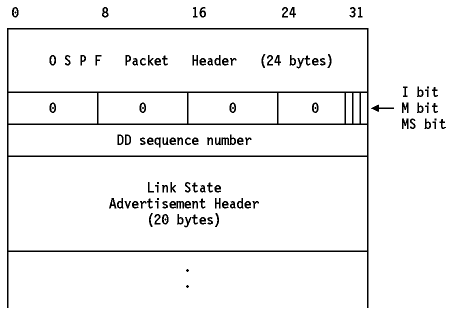
Figure: OSPF Database Description Packet
The rest of the packet contains a list of some or all of the contents of the
topological database. Each item in the database is a link state advertisement.
The database description packets contain the headers from these advertisements.
The headers are sufficient to uniquely identify each advertisement. This
information is used in the subsequent database synchronization. The format of a
Link State Header is shown in Figure - OSPF
Link State Advertisement Header.
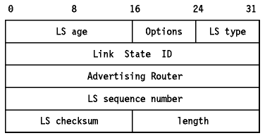
Figure: OSPF Link State Advertisement Header
The fields in the link state advertisement header are:
After the Database Exchange Process is over, each router has a list of those link advertisements for which the neighbor has more up-to-date instances. These are then requested in Link State Request packets. The response to a Link State Request packet is a Link State Update packet which contains some or all of the link state advertisements requested. At most one Link State Request can be outstanding: if no response is received, the requester must retry the request.
Link state advertisements come in five formats. The format of a Router Links
Advertisement (Type 1) is shown in
Figure - OSPF Router Links Advertisement.
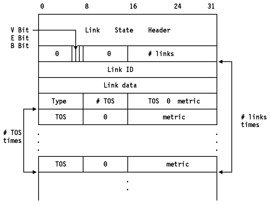
Figure: OSPF Router Links Advertisement - This advertisement is
itself encapsulated in an OSPF packet.

As an example, suppose the point-to-point link between routers RT1 (IP address: 192.1.2.3) and RT6 (IP address: 6.5.4.3) is a satellite link. To encourage the use of this line for high bandwidth traffic, the AS administrator may set an artificially low metric for that TOS. Router RT1 would then originate the following router links advertisement (assuming RT1 is an area border router and is not an AS boundary router):
; RT1's router links advertisement
LS age = 0 ; always true on origination
LS type = 1 ; indicates router links
Link State ID = 192.1.2.3 ; RT1's Router ID
Advertising Router = 192.1.2.3 ; RT1
bit E = 0 ; not an AS boundary router
bit B = 1 ; area border router
#links = 1
Link ID = 6.5.4.3 ; neighbor router's Router ID
Link Data = 0.0.0.0 ; interface to unnumbered SL
Type = 1 ; connects to router
# other metrics = 1
TOS 0 metric = 8
TOS = 2 ; high bandwidth
metric = 1 ; traffic preferred
When all Link State Request packets have been answered, the databases are synchronized and the routers are described as fully adjacent. This adjacency is now added to the two routers' link state advertisements.
Using its attached areas' link state databases as input, a router runs the SPF algorithm to build its routing table. The routing table is always built from scratch: updates are never made to an existing routing table. An old routing table is not discarded until changes between the two tables have been identified. Briefly, the calculation consists of the steps listed below. See RFC 1583 for more details about how the algorithm is implemented.
When the algorithm produces multiple equal cost routes, OSPF can distribute the load across them evenly. The maximum supported number of equal cost routes is implementation dependent.
A router periodically advertises its link state, so the absence of a recent advertisement indicates to a router's neighbors that the router is down. All routers which have established bidirectional communication with a neighbor run an inactivity timer to detect such an occurrence. If the timer is not reset, it will eventually pop, and the associated event places the state machine corresponding to that neighbor in the down state. This means that communication must be re-established from the beginning, including re-synchronization of databases. A router also re-issues its advertisements when its state changes.
A router can issue several link state advertisements into each area. These are propagated throughout the area by the flooding procedure. Each router issues a Router Links Advertisement. If the router is also the Designated Router for one or more of the networks in the area, then it will originate Network Links Advertisements for those networks. Area border routers issue one Summary Link Advertisement for each known inter-area destination. AS boundary routers originate one AS External Link Advertisement for each known external destination. Destinations are advertised one at a time so that the change in any single route can be flooded without reflooding the entire collection of routes. During the flooding procedure, many link state advertisements can be carried by a single Link State Update packet.
OSPF is a complex routing protocol, as will be clear from the preceding sections. The benefits of this complexity (over RIP) are as follows:
A detailed description of OSPF can be found in the following RFCs:
Intermediate System to Intermediate System (IS-IS) is a similar protocol to OSPF: it also uses a Link State, Shortest Path First algorithm (see Link-State, Shortest Path First for more details). However, IS-IS is an OSI protocol used for routing Connectionless Network Protocol (CLNP) packets within a routing domain. CLNP is the OSI protocol most comparable to IP.
Integrated IS-IS extends IS-IS to encompass TCP/IP. Integrated IS-IS is described in RFC 1195. Its goal is to provide a single (and efficient) routing protocol for TCP/IP and for OSI. Its design makes use of the OSI IS-IS routing protocol, augmented with IP-specific information, and provides explicit support for IP subnetting, variable subnet masks, TOS-based (type of service) routing, and external routing. It provides a provision for authentication information. Integrated IS-IS is based on the same SPF routing algorithm as OSPF.
Integrated IS-IS does not employ mutual encapsulation of IP and CLNP packets: both types are forwarded ``as-is'', nor does it change the behavior of the router as expected by either protocol suite. Integrated IS-IS behaves like an IGP in a TCP/IP network and in an OSI network. The only change is the addition of additional IP-related information.
IS-IS uses the term Intermediate System (IS) to refer to an IS-IS router, but we shall use the term router, since this is freely used in the Integrated IS-IS standard.
IS-IS groups networks into domains in a fashion that is analogous to OSPF. A routing domain is analogous to an Autonomous system, and it is subdivided into areas just like OSPF. Here is an overview of some of the more important aspects of IS-IS routing. Where possible, comparisons are made with equivalent concepts used in OSPF but it is dangerous to draw too close a parallel, since there are fundamental differences between the two protocols.
Integrated IS-IS permits considerable mixing of the two protocol suites, subject to certain restrictions on the topology. Three types of router are defined:
As its name suggests, Integrated IS-IS offers an integrated routing solution for multi-protocol networks. OSPF, like other TCP/IP routing protocols, uses an approach termed Ships In the Night (SIN) to handle coexistence issues. In the SIN approach, each multiprotocol router runs a separate process for each network layer (IP and OSI). A SIN router allows network managers to insert new SIN-based routing protocols, such as OSPF, one by one in the network, but the protocols exist independently of one another, and their frames pass each other like ships in the night.
Since the customer base of independent router vendors remains largely TCP/IP-focused, most of these vendors are choosing, for now, to stick with SIN even if it means their routers will not be able to work in OSI networks. A few of them have announced that they will support Integrated IS-IS in the future.
 Exterior
Routing Protocols
Exterior
Routing Protocols